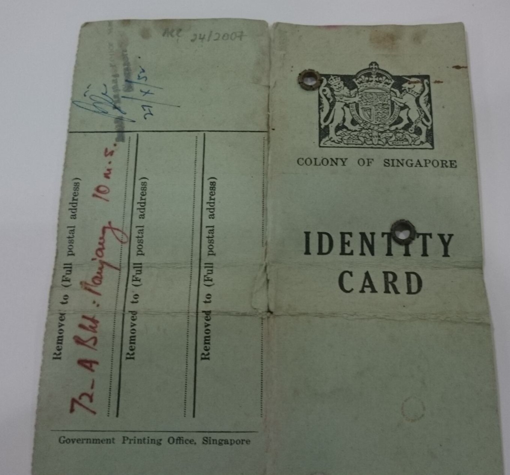
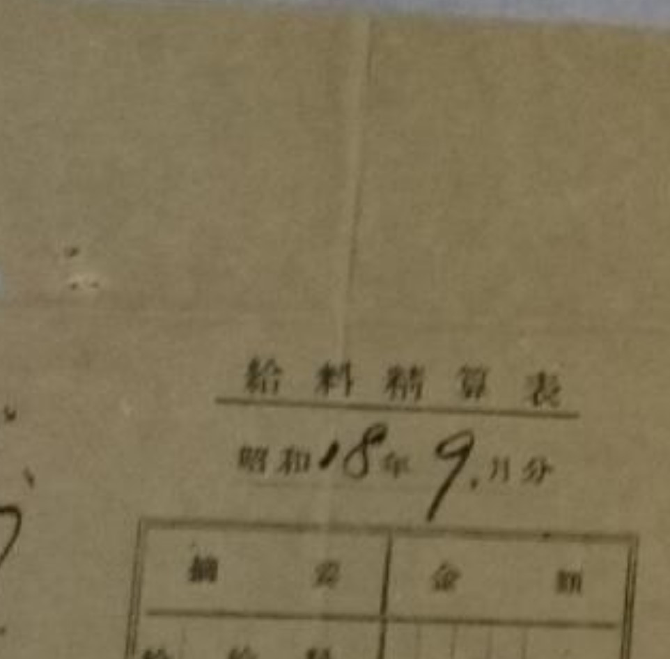

Crease

Creases along both the established foldline in the middle and also horizontally across in the lower half of the image
Crease line along the middle
Description
Crease refers to a line of crushed or broken substrate fibers, the result of a fold.
Treatment Notes
- Careful non-abrasive cleaning
- Strengthening/Reinforcement if creases are causing structural instability
Materials Affected
Paper, Books, Textile